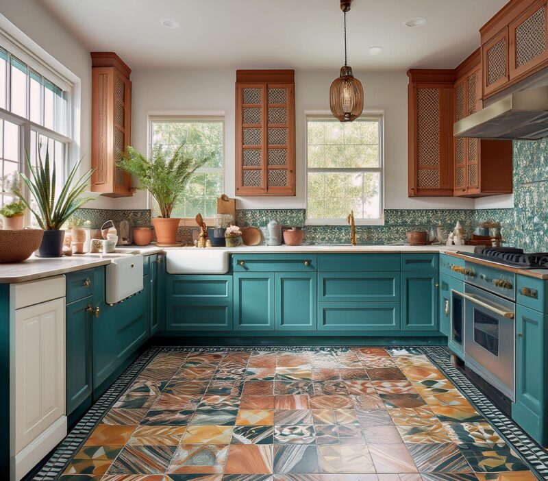
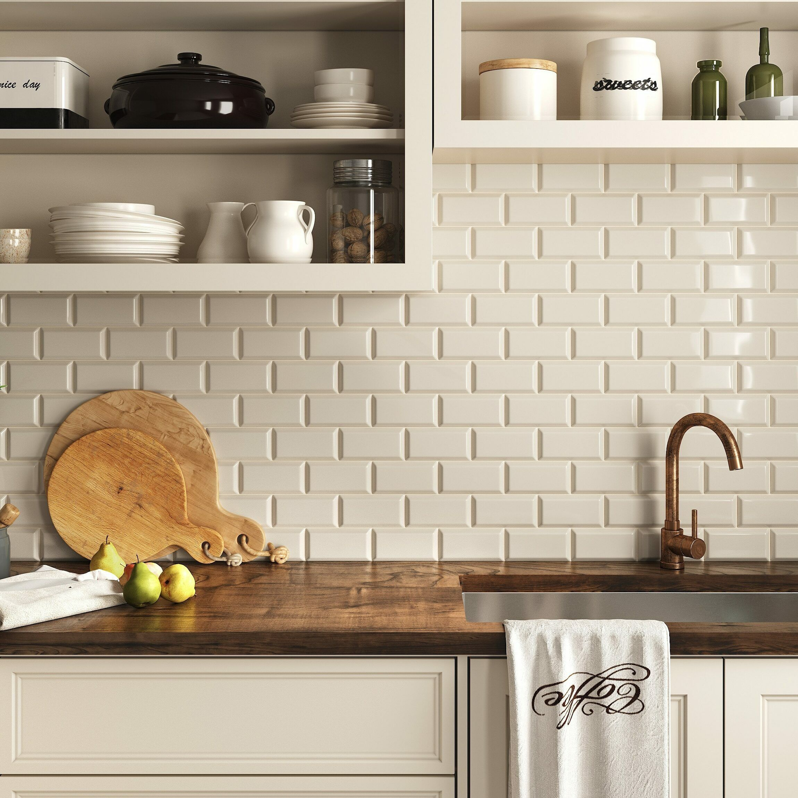
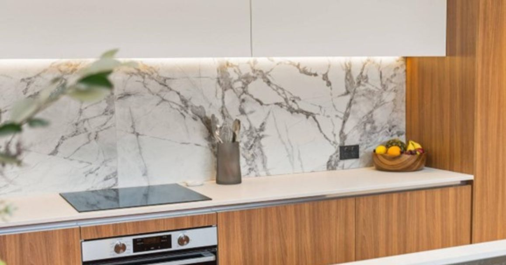

Keramičke pločice u kuhinji: Kako odabrati i postaviti pločice za kuhinjske prostore
Keramičke pločice u kuhinji nisu samo funkcionalne, već mogu značajno unaprijediti izgled prostora. Bilo da se radi o pločicama za zidove, podove ili kuhinjski backsplash, pravilno odabrane pločice mogu stvoriti ujednačen i elegantan dizajn koji je i dugotrajan i lako održavan.
1. Vrste kuhinjskih pločica
Prilikom odabira pločica, važno je razumjeti razlike između različitih vrsta:
- Glazirane keramičke pločice: Lako se čiste i otporne su na mrlje, što ih čini idealnima za backsplash.
- Porculanske pločice: Izuzetno izdržljive i otporne na vlagu, prikladne za podove.
- Staklene pločice: Moderan izgled i reflektiraju svjetlost, što ih čini izvrsnim za manje kuhinje.

2. Prilagodba stilu kuhinje
Odabir pločica treba odgovarati cjelokupnom stilu vaše kuhinje:
- Moderne kuhinje: Minimalističke pločice neutralnih boja ili pločice visokog sjaja.
- Rustikalni dizajn: Pločice s teksturama poput imitacije kamena ili drveta.
- Industrijski stil: Matirane tamne pločice ili pločice s metalik efektom.
3. Veličina pločica i prostor
Veličina pločica može značajno utjecati na percepciju prostora:
- Mali prostori: Manje pločice mogu dodati detalje, dok velike pločice stvaraju osjećaj prostranosti.
- Veliki prostori: Veće pločice smanjuju broj fuga i olakšavaju održavanje.


4. Funkcionalnost i održavanje
Različiti materijali i završne obrade utječu na trajnost i održavanje:
- Podne pločice: Odaberite protuklizne pločice za sigurnost.
- Zidne pločice: Glatke i sjajne pločice lakše se čiste od masnoće i mrlja.
5. Završni savjeti
- Razmotrite kontrastne boje za backsplash kako biste dodali vizualni interes.
- Koristite svijetle boje za manje kuhinje kako biste povećali svjetlinu prostora.
- Uvijek uzmite uzorke i provjerite kako izgledaju uz vašu rasvjetu i namještaj.
Uz pažljiv odabir i planiranje, keramičke pločice mogu transformirati vašu kuhinju u funkcionalan i estetski ugodan prostor.